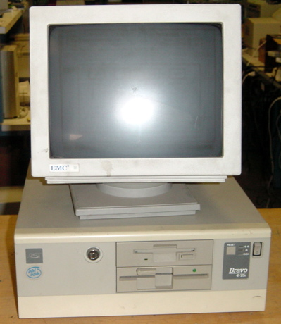

When I was young, my father upgraded desktop computer systems to "multi-media" capable computers. These systems did not have audio or game controller connections.
The upgrade provided these capabilities. The systems he was upgrading were branded as AST machines and were already a few years old. He sold these systems in order to bring money
in on the side for the family. He setup a sysyem for our family and I became hooked. I would create boot disks, re-install windows 3.1 and mess things up in order
to watch my dad fix them. I spent considerable time using computers as I grew up. Since I was home-schooled, I had plenty of time to focus on the latest hardware and
software. At approximately 18 years of age, I started working for Circuit City and helped a friend and co-worker work the first computer repair station within a Circuit City
store. I performed this job for 3 years and then quit in order to open up my own computer repair company with my father. We operated Leadtech Computer Repair
for 5 years before closing so that I could pursue a BS in Computer Science. During my time at CSUSB, I was given the opportunity to intern with Dr. Concepcion
and the campus' mobile development team. I developed for the client-side of an Android application called CaseAide and learned how to work with other developers. This
position provided me with the skills necessary to develop Android applications from the network code up. Refer to my current projects to see what I'm up to now!